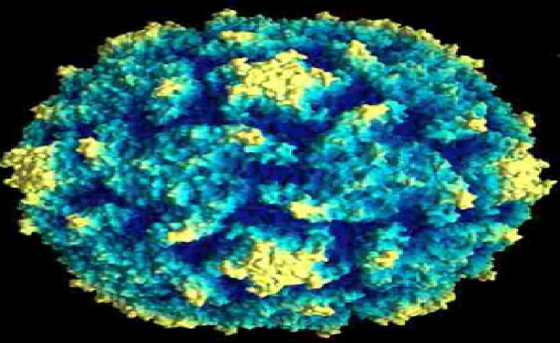

Polio

Polio is a disease that has caused paralysis in millions of children worldwide over the years.
Polio is caused by a virus that lives in the throat and intestinal tract. It is spread mainly through
contact with the feces of an infected person (for instance, by changing diapers).
Some children who get polio don't feel ill at all. Others have the symptoms of a common cold,
sometimes accompanied by pain and stiffness in the neck, back and legs. But some Polio
children get severe muscle pain, and within a week can be paralyzed - in other words, loose
the use of their muscles. Usually paralysis affects a child's legs, but it can also affect other
muscles, including those that control breathing.
Depending on the sites of paralysis, polio can be classifiedas spinal, bulbar, or spino-bulbar
disease. Progression to maximum paralysis is rapid (2-4 days), is usuallyassociated with fever
and muscle pain, and rarely continues after the patient's temperature
has returned to normal.
Spinal paralysis is typically asymmetric and moresevere proximally than distally. Deep tendon
reflexes are absent or diminished. Bulbar paral
ysis can compromise respiration and swallowing.
Paralytic polio is fatal in 2%-10% of cases. After the acute episode, many patients recover at
least some muscle function and prognosis for recovery can usually
be established within 6 months after onset of
paralytic manifestations.
There is no treatment for polio, and some children die from it. The incubation period for
poliomyelitis is commonly 6 to 20 days with a range of 3 to 35 days.